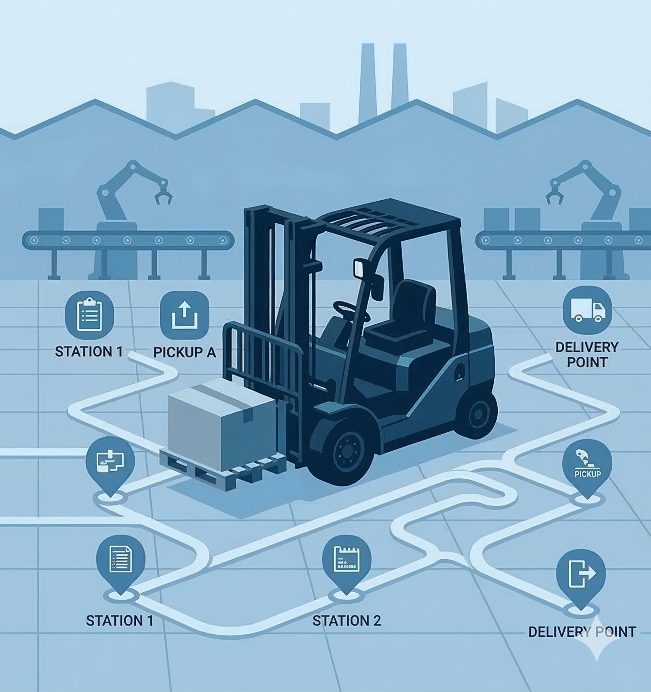
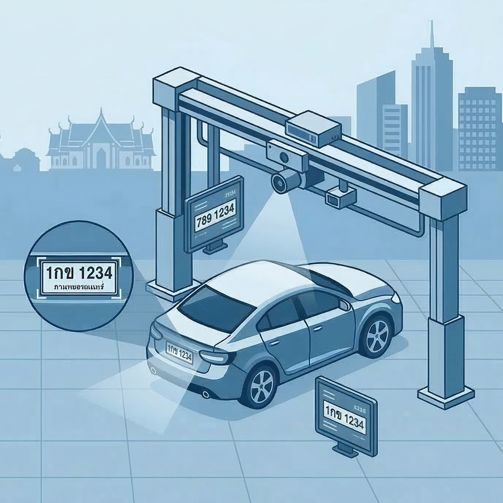

About Me
A professional with over two and a half years of experience in digital transformation in the manufacturing sector, applying data analytics and AI to address operational and business challenges. Experience includes projects such as process optimization, classical machine learning applications like sales forecasting, and image classification for defect type prediction. Also involved in people development by training and guiding users in adopting digital tools and data-driven workflows. Interested in translating data into actionable insights, improving business processes through automation, and building interactive dashboards using Tableau to support data-informed decision making. Currently expanding my expertise through studies in Data Analytics and Decision Science at RWTH Aachen Business School, where I am developing skills in machine learning foundations, analytics applications in areas such as marketing, energy and climate, and finance, as well as optimization models for solving real-world business problems.
Background
Education
-
M.Sc. Data Analytics & Decision Science
RWTH Aachen University
-
B.Sc. Mechanical Engineering
King Mongkut's University of Technology Thonburi
(Second Class Honors)
Experience
-
Digital Transformation Engineer
AGC Flat Glass (Thailand) Inc.Skills : Tableau, Alteryx, Uipath(RPA), Power Automate, Power Apps, Image Classification
-
Research Assistant
King Mongkut's University of Technology ThonburiSkills : FLUKA, SERPENT, XOOPIC, Academic writing, Research Methodology, Literature Review
Skills & Technologies
Data Science & Analytics
Programming & Tools
Languages
Projects
-

Inventory-ROP-and-Routing-Optimization
Simulates an order-to-warehouse workflow where sales orders trigger inventory checks (against safety stock/ROP) and generate optimized forklift picking routes. Produces a trip document via API output to support downstream warehouse operations and replenishment decisions.
Algorithms Python Network FlowView Code -

Thai License Plate Recognition
License Plate Recognition focused on Thai plates. Implements a computer vision pipeline for plate detection and character recognition, with preprocessing and evaluation to robustly read plates under real-world conditions.
YOLO Image Recognition Deep learningView Code -

Depression-Diagnosis-based-on-NLP
Builds an NLP pipeline to analyze text scraping from reddit thread and predict depression-related signals. Covers text preprocessing, feature extraction/embeddings, model training and evaluation, and interpretation of results to support screening-oriented insights.
Web Scraping NLPView Code -

Ames-housing-Price-Prediction
End-to-end regression project predicting house sale prices using the Ames Housing dataset. Includes data cleaning, feature engineering, model comparison/tuning, and performance evaluation to produce accurate price estimates and explain key value drivers.
Regression EDAView Code
Resume
Download ResumeContact
I am currently open to new opportunities. Whether you have a question or want to connect, feel free to reach me out
Phone
+49 152 236 49 360